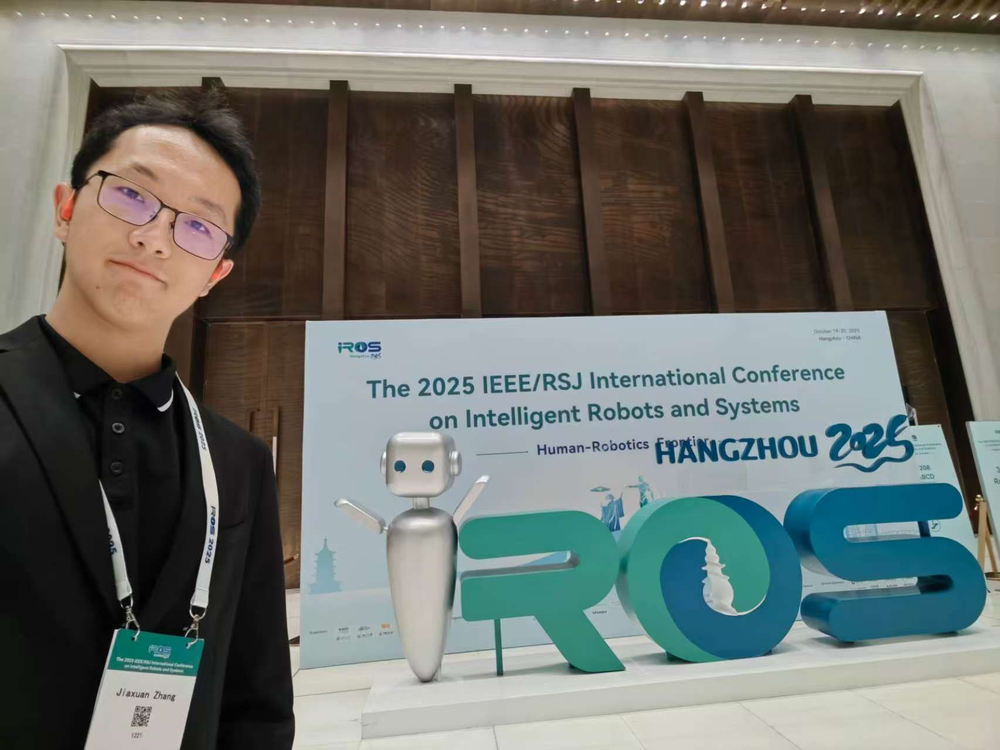

Applying for fully-funded PhD programs in the US starting Fall 2027, targeting institutions including Stanford University, UC Berkeley, MIT, and others.
Current vision-language-action (VLA) models, pre-trained on large-scale robotic data, exhibit strong multi-task capabilities and generalize well to variations in visual and language instructions for manipulation. However, their success rate drops significantly when faced with object concepts outside the training data, such as unseen object descriptions and textures in the dataset. To address this, we propose a novel agentic framework, VLA², which leverages OpenVLA as the execution backbone and effectively leverages external modules such as web retrieval and object detection to provide visual and textual knowledge about target objects to the VLA. This approach mitigates generalization failure when handling out-of-distribution objects. Based on the LIBERO simulation environment, we introduced novel objects and object descriptions to construct a new evaluation benchmark with three difficulty levels to test the effectiveness of our method. Our framework successfully outperformed the current state-of-the-art models on our designed hard-level generalization benchmark. Compared to the standalone OpenVLA baseline, VLA² achieves a 44.2% improvement in the success rate in the hard-level benchmark and an average improvement of 20.2% in all customized environments without any performance degradation on in-domain tasks.
For amputees with powered transfemoral prosthetics, navigating obstacles or complex terrain remains challenging. This study addresses this issue by using an inertial sensor on the sound ankle to guide obstacle-crossing movements. A genetic algorithm computes the optimal neural network structure to predict the required angles of the thigh and knee joints. A gait progression prediction algorithm determines the actuation angle index for the prosthetic knee motor, ultimately defining the necessary thigh and knee angles and gait progression. Results show that when the standard deviation of Gaussian noise added to the thigh angle data is less than 1, the method can effectively eliminate noise interference, achieving 100% accuracy in gait phase estimation under 150 Hz, with thigh angle prediction error being 8.71% and knee angle prediction error being 6.78%. These findings demonstrate the method's ability to accurately predict gait progression and joint angles, offering significant practical value for obstacle negotiation in powered transfemoral prosthetics.
申请 2027 年秋季入学的美国全奖博士项目，目标院校包括斯坦福大学、加州大学伯克利分校、麻省理工学院等。
当前的视觉-语言-动作(VLA)模型在大规模机器人数据上预训练，展现出强大的多任务能力，并能很好地泛化到操作任务中视觉和语言指令的变化。然而，当面对训练数据之外的物体概念时，如数据集中未见过的物体描述和纹理，其成功率显著下降。为了解决这个问题，我们提出了一个新颖的智能体框架VLA²，该框架以OpenVLA作为执行骨干，有效利用网络检索和物体检测等外部模块为VLA提供关于目标物体的视觉和文本知识。这种方法缓解了处理分布外物体时的泛化失败问题。基于LIBERO仿真环境，我们引入了新颖的物体和物体描述，构建了具有三个难度级别的新评估基准来测试我们方法的有效性。我们的框架在设计的困难级别泛化基准上成功超越了当前最先进的模型。与独立的OpenVLA基线相比，VLA²在困难级别基准中实现了44.2%的成功率提升，在所有定制环境中平均提升20.2%，且在域内任务上没有性能下降。
对于使用动力大腿假肢的截肢者来说，跨越障碍物或复杂地形仍然是一个挑战。本研究通过使用健康踝关节上的惯性传感器来指导越障运动来解决这个问题。遗传算法计算最优的神经网络结构来预测大腿和膝关节所需的角度并适配步态进度预测算法。步态进度预测算法确定假肢膝关节电机的驱动角度指数，最终在进入假肢腾空摆动阶段之前计算出的大腿和膝关节角度，在摆动期间实时计算步态进度。结果表明，当添加到大腿角度数据的高斯噪声标准差小于1时，该步态进度预测方法能有效消除噪声干扰，在150 Hz下实现100%的步态相位进度估计准确性，大腿角度预测误差为8.71%，膝角度预测误差为6.78%。这些发现证明了该方法准确预测步态进展和关节角度的能力，为动力大腿假肢的障碍物跨越控制研究提供了重要的实用价值。